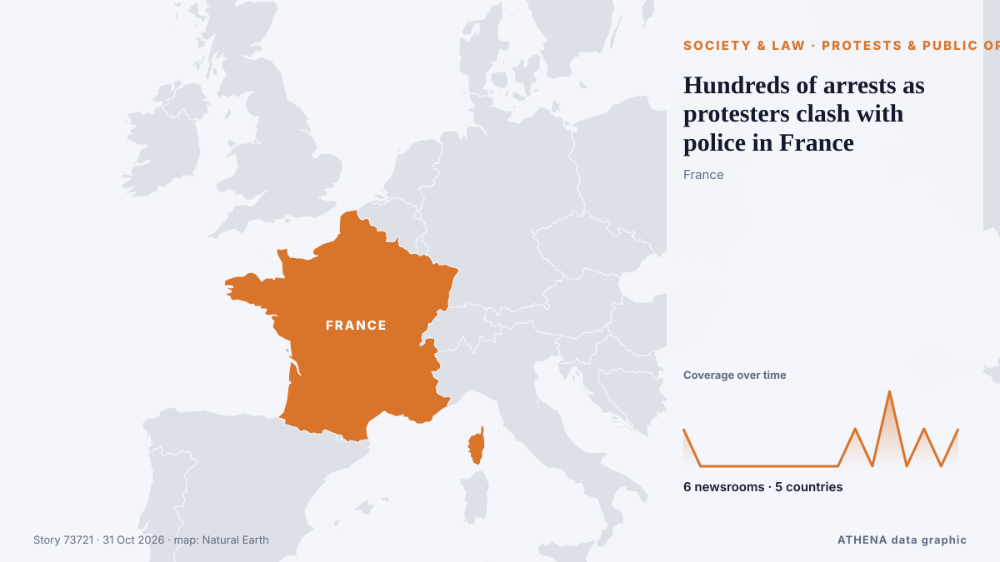

الاحتجاجات والرأي العام
| 18 أكتوبر | 0 |
|---|---|
| 19 أكتوبر | 0 |
| 20 أكتوبر | 0 |
| 21 أكتوبر | 0 |
| 22 أكتوبر | 0 |
| 23 أكتوبر | 3 |
| 24 أكتوبر | 0 |
| 25 أكتوبر | 0 |
| 26 أكتوبر | 4 |
| 27 أكتوبر | 2 |
| 28 أكتوبر | 2 |
| 29 أكتوبر | 1 |
| 30 أكتوبر | 9 |
| 31 أكتوبر | 3 |
تُعرض العناوين بالإنجليزية كما نُشرت.

Hundreds of arrests as protesters clash with police in France
Hundreds of people have been arrested in France after protesters clashed with police for a third weekend. من Sydney Morning Herald
Average taxi income rises: survey
A recent survey by the Moroccan Center for Citizenship found that 87.3% of respondents are dissatisfied with public healthcare services, while 76.2% are unhappy with taxi services. من Hespress English
Third weekend of protests in France as youth-led rallies sweep Europe
The Interior Ministry told reporters that 70,000 people are estimated to have turned out for the main protest in Paris. من The Irish News (Belfast)
France deploys 70,000 police officers to prepare for new wave of protests on Halloween
Emmanuel Macron's government deploys 70,000 police officers as France braces for a third week of intense protests amid over $1 billion in losses. من Fox News (World)
Youth protests begin in over 30 German cities as authorities warn of possible unrest
In Berlin, demonstrators are gathering at the Brandenburg Gate with more than 10,000 participants expected. من TASS (English)
Fears of violence as France braces for Halloween protests
France will deploy some 70,000 police officers in Paris and other cities ahead of a new round of nationwide protests on Saturday, with Interior Minister Laurent Nuñez warning of a "very high risk of… من France 24 English
'Won't move forward without public': Arunachal CM amid protests over Siang project
Arunachal Pradesh CM Pema Khandu has assured residents that the proposed 11,200-MW Siang hydropower project will not be imposed on them, saying a decision will be taken only after its feasibility… من Times of India
Thousands of students and workers protest in Italy under heavy security
Thousands of students and workers took to the streets across Italy on Friday, calling for more school funding and relief from the soaring cost of living, amid a high police presence to avert possible… من The Local Italy
Europe's Gen Z protesters just want to be heard
MAYA Gourdel, a 19-year-old student in Brussels, sits at a desk writing slogans against those running her country: “If we burn, you burn with us!” من New Straits Times
French interior minister to deploy 70,000 police for Halloween protests
PARIS, Oct 29 - French Interior Minister Laurent Nunez said that this Saturday was looking like \"a very high risk\" day for public order and that he would again deploy 70,000 security forces to try… من The Straits Times
France's Yellow Vest movement calls new protests for October 31st
France's Yellow Vest movement, which has helped organise protests rocking the country, called Saturday for new demonstrations on October 31. من The Local France
Protesters storm Serbian pro-Vucic TV station after his loss at polls
President Vucic called the incident an attack on free speech and the freedom of journalism. من Al Jazeera English
French Senate Passes Bill to Make Protesters Pay for Unrest Damage
However critics warned the move could curb the right to protest. من The Straits Times
Explained: Why Proposed Siang Dam In Arunachal Is Facing Protests
India is planning a 11,200 MW dam and reservoir on the Siang river to counter China's proposed 60,000-MW hydropower expansion project on the upper reaches of the river. من NDTV
Serbia’s ‘students’ celebrate for a second night after election victory
Thousands gathered on the streets of Belgrade for a second night to celebrate the student-led movement's victory. من Al Jazeera English
Employers must prioritise locals before hiring foreign workers, says Ramanan
Employers must use MyFutureJobs portal to seek local candidates first. من Malaysiakini
Foreign Office issues travel update for 13 countries including Egypt, Turkey and Jordan
The Foreign Office has updated its Middle East travel advice for 13 countries, including Turkey and Egypt, warning that the regional situation 'remains deeply unpredictable' من Liverpool Echo
Hundreds protest in Tel Aviv, Jerusalem and Haifa, call for Jewish-Arab government
Demonstrators gathered to demand Jewish-Arab cooperation as the opposition has won 67 seats, including 19 held by Arab parties, leaving Eisenkot's bloc short of a majority without Arab support. من Haaretz (English)
Italian PM slams 'shameful' release of alleged protest organiser
Italian Prime Minister Giorgia Meloni on Wednesday slammed as "shameful" the decision by a judge to dismiss accusations against a campaigner arrested on terrorism charges for allegedly seeking to… من The Local Italy